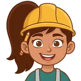
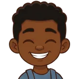
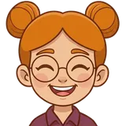
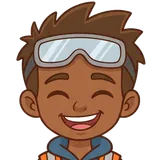
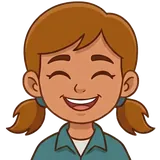
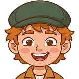
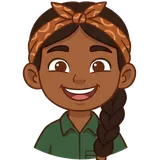
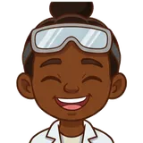

چهار حالتنشانگر گرد با دم کوچک؛ سر از لبهٔ گرد بیرون میزند. هر فایل مستقل است (عکس داخل SVG گذاشته شده).
thinkinghappysurprisedoops
روی گرهاندازهٔ واقعی (۶۲×۷۲) و دو برابر؛ دم نشانگر روی لبهٔ بالای گره مینشیند
چرا b1انتخاب من، نه تصمیم؛ نام و نقش راهنما هنوز باز است (پرسش ۲ مشخصات)

b1 (انتخاب)

b2

b3

b4

b5

b6

b7

b8
کلاه ایمنی زرد یعنی «کارگاه و ساختن»: با موضوع ماشینهای ساده میخواند و آیکون «راهنما» در منو هم همین کلاه است.
زرد پررنگترین لکهٔ رنگ بین هشت شخصیت است و روی هر چهار زمینه (کرم، شب، هلویی، آبیخاکستری) در دید اول از زمینه جدا میماند. این را با چشم خودم دیدهام، نه با آزمون کودک.
چهار ژست لازم را دارد: thinking، happy، surprised، oops. هشتتای b* همهشان اینها را دارند.
از آثار موجود پروژه است؛ شخصیت شناختهشده یا لوگوی کسی نیست.
محدودیتها (صادقانه): عکسها فقط سر و شانهاند، ۱۶۰×۱۶۰ (نه تمامقد). ایستادن، راهرفتن و چرخیدن واقعی ممکن نیست؛ «راه رفتن روی خط» فقط با جابهجایی نشانگر (پرش کوتاه) نشان داده میشود. بالاتر از حدود ۱۲۰px نرم میشود (در بوم ۲× هماکنون دیده میشود). اگر مالک «ژست ایستاده/راهرفتن» بخواهد، باید تصویر تازه ساخته شود (خارج از این کیت). دربارهٔ دوستداشتنی بودنِ این شخصیت هیچ ادعایی نمیشود (B9).